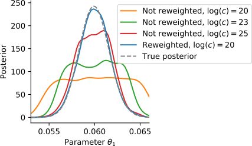
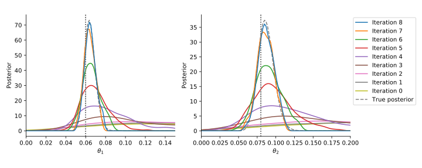

ABC
Approximate Bayesian ComputationHow to infer parameters for complex stochastic models?
Approximate Bayesian Posterior
We want: \[\pi(\theta|D) \propto \color{red}{p(D|\theta)}\pi(\theta)\]
We get: \[\pi_{ABC}(\theta|D) \propto \color{red}{\int I(\{d(y, D) \leq \varepsilon\})p(y|\theta)\operatorname{dy}}\pi(\theta) \approx \frac{1}{N} \sum_{i=1}^N\delta_{\theta^{(i)}}(\theta)\] with distance $d$, threshold $\varepsilon>0$, and summary statistics $s$

Not everything is a nail.
Noise
Who left the noise out?
“To avoid assumptions of a normal likelihood we use [...] ABC”
“ABC does not use a likelihood”
What happens when ignoring noise in ABC?
Assume: Model $y\sim p(y|\theta)$ does not account for noise.
But: Measurements are noisy, $D\sim \pi(\bar y|y,\theta)$.
What happens when ignoring noise in ABC?
- Confident but potentially wrong parameter estimates
- Assumes noise-free measurements and no model error
- Analysis for a wrong model
How to account for noise?

No noise, no ABC
“ABC gives exact inference for the wrong model”
... namely the acceptance step induces (uniform) noise
Theorem (Exact Inference)
Using the modified kernel with $c>\pi(D|y,\theta)$ $\forall y,\theta$, we sample from the true posterior \[\pi_\text{ABC}(D|\theta) = \pi(D|\theta) \propto \int\pi(D|y,\theta)p(y|\theta)\mathop{dy}\cdot\pi(\theta)\] assuming noisy data $D\sim\pi(\bar y|y,\theta)$.
Proof: Yep.
- non-trivial noise allows to do exact likelihood-free inference
- also applicable to stochastic models
- allows to parameterize the noise model
Problem: It does not scale in practice
An efficient approach
ASSA: Adaptive Sequential Stochastic AcceptorIntegrate in SMC
We temperate:
3. Accept with probability
$\left(\frac{\pi(D|y,\theta)}{c}\right)^{\color{red}{1/T_t}}$
with $c>\pi(D|y,\theta)$ $\forall y,\theta$, $T_0\gg 1$,
$T_{N_t} = 1$.
This way, we take importance samples from \[\pi_{\text{ABC},t}(\theta|D)\propto\int\pi(D|y,\theta)^{\color{red}{1/T_t}}p(y|\theta)\mathop{dy}\cdot\pi(\theta).\]
How to choose $c$?
- Highest peak of density (usually at $y=D$)
- Empirical highest peak
- Adaptive choice
Introduces a bias if simulations with a higher density occur.
However, this can be overcome ...
Theorem (Rejection Control Importance Sampling)
For any $c_t>0$, we have target the correct distribution when we accept with probability $\min\left[\frac{\pi(D|y,\theta)}{c},1\right]^{1/T_t}$ and update the weights to: \[\tilde w := \color{red}{\frac{\left(\frac{\pi(D|y,\theta)}{c_t}\right)^{1/T_t}}{\min\left[\frac{\pi(D|y,\theta)}{c_t},1\right]^{1/T_t}}}\cdot\frac{\pi(\theta)}{g_t(\theta)}\]
Acceptance rate scheme
- Predict acceptance rate based on previous simulations: \[\gamma_T \approx \frac 1 N \sum_{i=1}^N v_t(\theta_i^{(t-1)}) \min\left[\left(\frac{\pi(D | y_i^{(t-1)},\theta_i^{(t-1)})}{c_t}\right)^{1/T},1\right]\]
- Choose $T$ to fix rate to a constant value
- In particular allows to automatically choose $T_1$
Smooth transition from prior to posterior
Some results
Applicable to various model types and noise models
| Id | Description | Type | Noise model | Parameters | Data |
|---|---|---|---|---|---|
| M1 | Conversion reaction | ODE | Normal | 2 | 10 |
| M2 | Conversion reaction | ODE | Laplace | 2 | 10 |
| M3 | Hodgkin-Huxley neurons | SDE | Normal | 2 | 100 |
| M4 | Gene expression | MJP | Poisson | 2 | 10 |
| M5 | STAT5 dimerization | ODE | Normal | 11 | 48 |
| M6 | Tumor spheroid growth | ABM | Normal | 7 | 30 |
Orders of magnitude speed-up
Scales to challenging problems
11 parameters ODE model with real data (M5)Implementation
github.com/icb-dcm/pyabc
# define problem
abc = pyabc.ABCSMC(model, prior,
acceptance_kernel,
temperature_scheme,
acceptor)
# pass data
abc.new(database, observation)
# run it
abc.run()
Summary
Summary
- Non-trivial noise model enables exact likelihood-free inference.
- Developed a widely applicable sequential algorithm.
- Orders of magnitude speed-up.
- Self-tuned.
Acknowledgments
Thanks to: Jan Hasenauer (and the whole lab), Elba Raimúndez-Álvarez, Emad Alamoudi, the FitMultiCell team, ...
Backup
Multi-scale model of tumor growth (M6)
based on Jagiella et al., Cell Systems 2017
- cells modeled as interacting stochastic agents, dynamics of extracellular substances by PDEs
- simulate up to 106 cells
- 10s - 1h for one forward simulation
an SDE model

a non-identifiable ODE model

Selection of temperatures
- Bridge from prior to posterior with $T_{N_t}=1$
- Balance information gain and acceptance rate
- Fallback: Exponential decay scheme $T_{t+1} = \alpha T_t$ with $\alpha\in(0,1)$
Data

Applicable to various model types and noise models